Table of contents |
Author: Johannes Buchner Homepage: http://astrost.at/istics/ Further information: The nuclear obscurer of Active Galactic NucleiAbstract: Most Active Galactic Nuclei (AGN) are obscured by thick layers of gas and dust. Diverse theoretical models and suggested geometries have been proposed, the oldest of which is a torus. In this talk I review what has been learned recently about the importance of the galaxy-scale obscuration, the behaviour of the nuclear obscurer and first attempts at imaging the parsec-size structure. Finally, I present a new approach to "image" the torus substructure using eclipse events in X-rays. 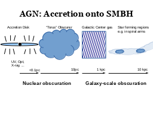 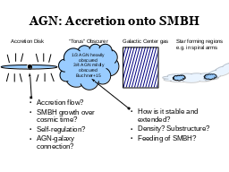 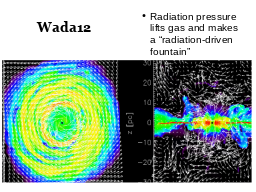
 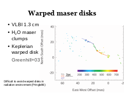
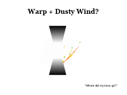
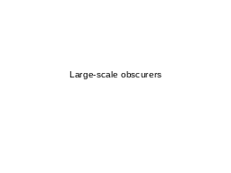
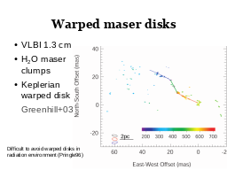
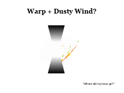
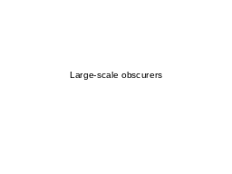

 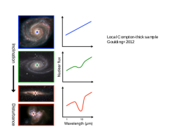
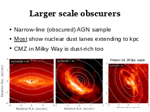
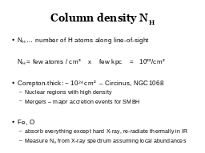
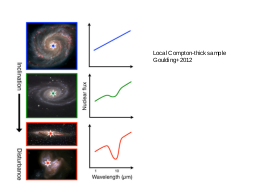
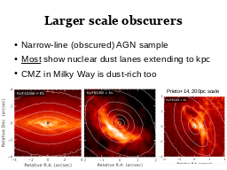
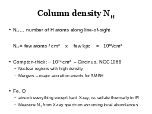

 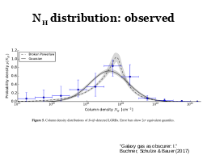
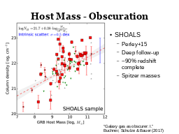
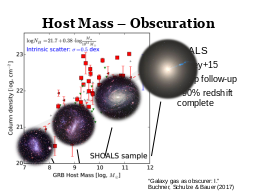
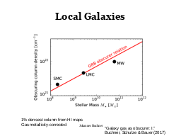
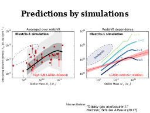
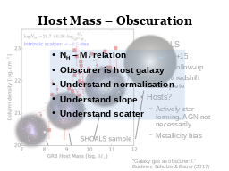
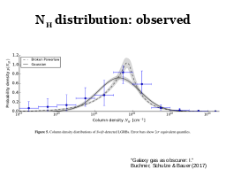
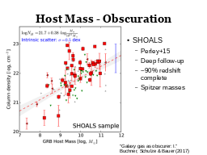
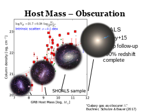
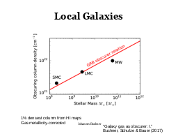
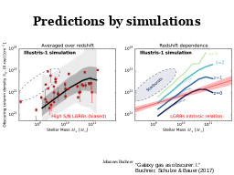
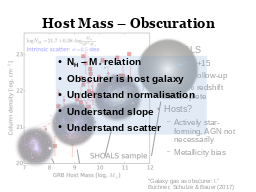

 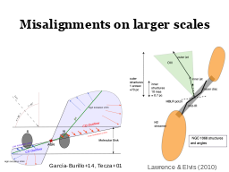
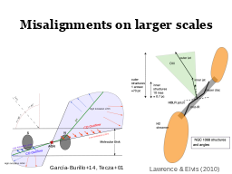


 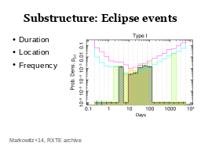
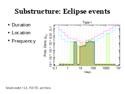
 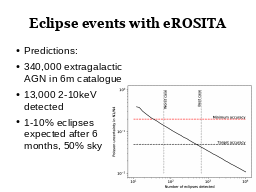
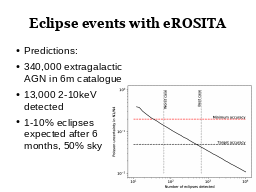
|